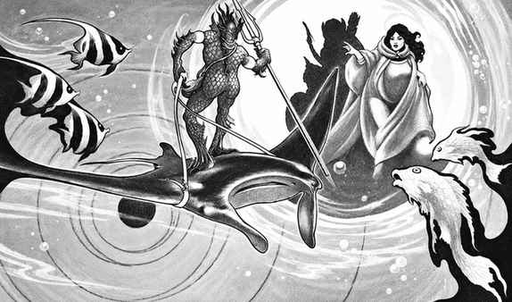
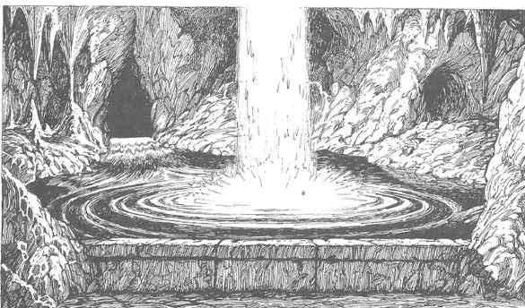

元素水位面 · The Plane of Elemental Water
元素水位面是一片没有表面的无尽海洋。上方没有空气，下方没有海床，水的压力均匀地延伸到看不见的深处。这里的水通常清澈而带绿色；越接近其他元素位面，水会混入泥、沙、冰、蒸汽或盐。水元素、海洋生物、海巨灵、马里德（marid）和来自原初位面的水生居民在此生活。

生存 · Survival
呼吸与视觉 · Breathing and Vision
没有水下呼吸能力的旅行者只能短暂屏息。剧烈活动、负重和战斗会缩短可屏息时间；失败的体质检定会加快窒息。水下视觉距离较短，颜色和远距离细节会随深度消失；红外视觉在此只能显示附近温差，通常不能提供陆地上那样的优势。
遭遇 · Encounters
每 4 小时有 1/10 的几率遭遇：
| d100 | 遭遇类别 |
|---|---|
| 1–10 | 元素现象 |
| 11–25 | 元素口袋 |
| 26–00 | 生物遭遇 |
元素现象 · Elemental Phenomena
用 d12 决定：蒸汽流、漩涡、冰流、潮汐钻、淤泥流、空气水袋、通往原初位面的漩涡。蒸汽流会把来客卷入高速水流；漩涡可能使旅行者失去方向；冰流会冻结或撞击目标。潮汐钻是快速移动的水柱，淤泥流会遮蔽视线并把旅行者拖走。空气水袋可提供短暂呼吸空间，但也可能被其中的生物占据。通往原初位面的漩涡常把旅行者送到海面、深海海沟或其他水体。
元素口袋 · Elemental Pockets
元素水位面中的口袋包括空气、土、火、泥、盐、蒸汽、真空、矿物、尘土、辐射、灰烬、冰、闪电和烟口袋。空气口袋可成为休息地，也可能藏有来自空气位面的捕食者；土口袋是被岩石包围的小岛；盐口袋会使水生生物脱水；蒸汽和火焰口袋会造成高温与灼伤。矿物口袋可能含有宝石，但接触矿物墙壁会使旅行者被困。
生物遭遇 · Creature Encounters
水位面生物往往由水、海洋生物或水元素构成。它们通常能自由呼吸和移动于水中，并能操纵水流；水元素生物免疫水的压迫与普通水下环境。遭遇表包括水元素、水巨灵、巨型水母、海兽、水鬼、海精灵、海鲸、特里同、人鱼、海象和各种水、冰、泥准元素生物。原书的 MM、MMII、FF 与 MM* 注记说明各生物来源和水位面专属能力。
移动 · Movement
游泳是水位面最常见的移动方式。没有游泳速度的生物按普通游泳规则移动，行动受护甲、负重和水流影响。下沉生物每轮下降，漂浮物向上移动；聪明的旅行者可以借水流、漩涡或元素向导改变方向，但在没有参照物的深水中很容易迷失。
战斗 · Combat
水位面的战斗受到所有内层位面限制，并增加水流、深度、能见度和呼吸规则。远程攻击会受水阻影响；弩只有在使用特殊魔法箭矢时才可靠。近战武器的挥动会变慢，火焰武器和普通火焰效果减弱。水位面原住民可以在三维空间中攻击，旅行者若不会游泳或不能控制漂浮方向，很快会失去位置优势。
魔法 · Magic
水位面遵循内层位面的魔法限制。火焰法术会被水削弱，火球通常只能形成短暂的热泡；水、冰和水元素相关法术更容易维持。召唤法术可能出现闪亮的球体，球体中封存被召唤生物；魅惑法术可使这些球体被吸引并绕目标旋转。元素生物通常免疫这类球体的魅惑效果。

元素水位面的特征 · Features of the Plane of Water
水元素生物与海洋生物会在水流中隐藏，旅行者常只能看到水中的轮廓。它们重视力量、耐力与对水的控制；许多生物会把原初位面的陆地居民当成迷路者、猎物或交易对象。
海巨灵（Marids）是水位面最混乱、最自负的元素种族。他们的统治者是帕夏（pasha），以宫廷、故事、猜谜和复杂的礼仪维系权力。海巨灵可以在水中塑造自己的宫殿，并要求来客尊重其头衔；他们也可能因为一句失礼的话而把旅行者赶入危险水域。
海巨灵通常会与其他位面的来客交易，但他们的承诺很少直截了当。谈判者应注意双关语、夸张的誓言和“礼物”中的隐藏义务。召唤海巨灵的法师若试图强行控制他们，往往会引来长期的报复。